openai/gpt-4.1-nano
mean reward 0.734 · compile rate 85% · 120 valid rollouts. Blue = reference; green ≥ 0.9, orange ≥ 0.4, red below. Hover a tile for the generated OpenSCAD.
L1 · example 0 · mean 1.00 · max 1.00
A solid rectangular box 15mm wide, 15mm deep, and 35mm tall.

;")
;")
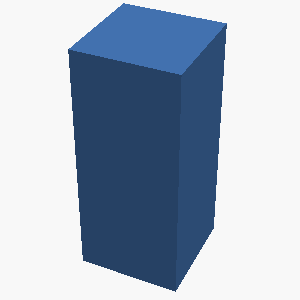
L2 · example 1 · mean 0.41 · max 1.00
A solid hexagonal prism 35mm tall, 60mm across the flats, with two flats parallel to the x axis, with a 12mm-radius hole drilled vertically through the center of the entire part. The part sits on the z=0 plane, centered on the Z axis.

 {
// size: distance across flats
// height: height of prism
r = size / (2 * cos(30)); // Distance from center to a vertex
linear_extrude(height)
polygon(points=[
[r, 0],
[r/2, r * sin(60)],
[-r/2, r * sin(60)],
[-r, 0],
[-r/2, -r * sin(60)],
[r/2, -r * sin(60)]
]);
}
difference() {
// Create the hexagonal prism
hex_prism(60, 35);
// Drill the hole through the center
translate([0, 0, 0])
cylinder(h=35, r=12, $fn=64);
}")
 {
// Hexagon with flat to flat distance of 60mm
// The distance across flats for a regular hexagon: 2 * radius
radius = 60/2; // 30mm
height = 35; // height of prism
// Hexagon vertices calculation
poly_points = [
for (i = [0 : 5])
[radius * cos(30 + i*60), radius * sin(30 + i*60)]
];
linear_extrude(height=height)
polygon(points=poly_points);
}
difference() {
// Main hexagonal prism
hex_prism();
// Hole along the z-axis centered at (0,0)
translate([0, 0, 0])
cylinder(h=height + 2, r=12, $fn=64);
}")
 {
// size: distance across flats
// height: height of the prism
radius = size / (2 * sin(30)); // distance from center to vertex
polygon_points = [];
for (i = [0 : 6]) {
angle_deg = 60 * i;
angle_rad = angle_deg * pi / 180;
x = radius * cos(angle_rad);
y = radius * sin(angle_rad);
polygon_points = concat(polygon_points, [[x, y]]);
}
linear_extrude(height=height, center=true) polygon(points=polygon_points);
}
translate([0, 0, 0])
difference() {
// Main hexagonal prism
hex_prism(60, 35);
// Central hole
translate([0, 0, -100]) cylinder(h=200, r=12, $fn=64);
}")
L5 · example 2 · mean 0.25 · max 1.00
Create a triangular prism standing 45mm tall: its base is a right triangle with legs of 20mm (along X) and 30mm (along Y) meeting at the origin.

 and 30mm (Y)
// Height: 45mm along Z
module triangle_base() {
polygon(points = [
[0, 0],
[20, 0],
[0, 30]
]);
}
linear_extrude(height = 45) {
triangle_base();
}")
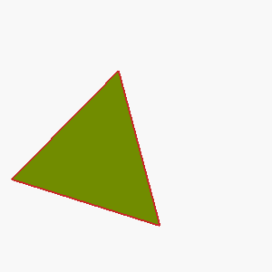
L4 · example 3 · mean 0.47 · max 0.69
A solid hexagonal prism 50mm tall, 40mm across the flats, with two flats parallel to the x axis, with a 3mm-radius hole drilled vertically through the center of the entire part; and a cone of base radius 12mm and height 20mm standing centered on its top face, apex up. The part sits on the z=0 plane, centered on the Z axis.

 {
height = 50;
flat_to_flat = 40;
// Calculate the radius of the circumscribed circle
r = flat_to_flat / (2 * cos(30));
// Create hexagon in XY plane
polygon_points = [for (i = [0 : 5])
[
r * cos(i * 60),
r * sin(i * 60)
]
];
linear_extrude(height=height, center=false)
polygon(points=polygon_points);
}
// Main assembly
difference() {
// Hexagonal prism
hex_prism();
// Hole drilled through the center
translate([0,0,0])
cylinder(h=50, r=3, $fn=64);
}
// Cone on top
translate([0,0,50])
cone(height=20, r1=12, r2=0, $fn=64);")
 {
// Hexagon with 40mm across flats, height 50mm
// Hex is oriented with two flats parallel to x-axis
hull() {
for (angle = [0, 60, 120, 180, 240, 300]) {
translate([40/2 * cos(angle), 40/2 * sin(angle), 0])
circle(r=0);
}
}
}
module hex_with_height() {
// Create the hexagonal prism
linear_extrude(height=50)
polygon(points=[
[40/2*cos(0), 40/2*sin(0)],
[40/2*cos(60), 40/2*sin(60)],
[40/2*cos(120), 40/2*sin(120)],
[40/2*cos(180), 40/2*sin(180)],
[40/2*cos(240), 40/2*sin(240)],
[40/2*cos(300), 40/2*sin(300)]
]);
}
// Create the base prism
hex_prism();
// Subtract the hole
translate([0,0,0])
difference() {")
 {
// Hexagon with the flat sides parallel to x-axis
// Hexagon inscribed with distance across flats = 40mm
// Hexagon side length s = 40 / (2 * cos(30°)) = 40 / (2 * (sqrt(3)/2))) = 40 / sqrt(3)
s = 40 / sqrt(3);
polygon(points=[
[0,s],
[s/2, s/2],
[s/2, -s/2],
[0, -s],
[-s/2, -s/2],
[-s/2, s/2]
]);
}
difference() {
// Hexagonal prism 50mm tall
translate([0,0,0])
linear_extrude(height=50)
hex_prism();
// Center hole with radius 3mm through entire height
translate([0,0,0])
cylinder(h=50, r=3, $fn=64);
}
module cone_on_top() {
// Cone of radius 12mm, height 20mm, apex up, centered on top face of the prism
translate([0,0,50]) // on top of t")
 {
// Hexagon with flats aligned parallel to x axis
hull() {
for (i = [0 : 2]) {
angle = 60 * i;
// point at top
rotate([0, 0, angle]) translate([hex_radius, 0, 0]) circle(r=0.1);
}
// Define the shape by rotating points
polygon(points=[
[hex_radius, 0],
[hex_radius * cos(60), hex_radius * sin(60)],
[0, hex_radius],
[-hex_radius * cos(60), hex_radius * sin(60)],
[-hex_radius, 0],")
L1 · example 4 · mean 1.00 · max 1.00
A solid cylinder 25mm tall with a radius of 20mm, standing upright.

L5 · example 5 · mean 1.00 · max 1.00
Create a triangular prism standing 25mm tall: its base is a right triangle with legs of 45mm (along X) and 30mm (along Y) meeting at the origin.

 {
polygon(points=[
[0, 0],
[45, 0],
[0, 30]
]);
}
// Extrude the triangle base to form a prism standing 25mm tall
linear_extrude(height=25)
triangle_base();")
 {
polygon(points=[
[0, 0],
[base_x, 0],
[0, base_y]
]);
}
// Extrude the triangle to form a prism
linear_extrude(height=height, center=false, convexity=10)
triangle_base();")
 and 30mm (Y)
module triangle_base() {
polygon(points=[[0,0], [45,0], [0,30]]);
}
// Extrude the triangle to create a triangular prism of height 25mm
linear_extrude(height=25) {
triangle_base();
}")
 and 30mm (Y)
// - Height (Z): 25mm
module triangle_base() {
polygon(points=[[0,0], [45,0], [0,30]]);
}
// Create the prism by extruding the triangle in the Z direction
linear_extrude(height=25)
triangle_base();")
L3 · example 6 · mean 0.53 · max 0.72
A solid hexagonal prism 25mm tall, 50mm across the flats, with two flats parallel to the x axis, with 4 holes of radius 2mm drilled vertically through it, evenly spaced on a circle of radius 18.1mm around the center, the first hole on the +X axis; and a 8mm-radius hole drilled vertically through the center of the entire part. The part sits on the z=0 plane, centered on the Z axis.


hex_height = 25; // height of the prism
diameter_flat = 50; // across flats
// Hole parameters
hole_radius = 2;
center_hole_radius = 8;
holes_count = 4;
holes_radius = 18.1;
// Helper module for hexagon
module hex_prism() {
// Create a regular hexagon with given flat-to-flat distance
// The distance across flats = 2 * hex_radius
// hex_radius is the distance from center to flat side
polygon(points=[
[hex_radius, 0],
[hex_radius/2, hex_radius * sqrt(3)/2],
[-hex_radius/2, hex_radius * sqrt(3)/2],
[-hex_radius, 0],
[-hex_radius/2, -hex_radius * sqrt(3)/2],
[hex_radius/2, -hex_radius * sqrt(3)/2]
]);
}
// Main object
d")
 {
// Hexagon with flat-to-flat distance of 50mm
// radius of the circumscribed circle: 25 / cos(30°) ≈ 25 / 0.8660254 ≈ 28.8675
// But easier to define a hexagon with a side length of 25mm
polygon(points=[
[25,0],
[12.5,21.652],
[-12.5,21.652],
[-25,0],
[-12.5,-21.652],
[12.5,-21.652]
]);
}
// Create the hexagonal prism
difference() {
linear_extrude(height=25)
hex_prism();
// Central hole
translate([0,0,0])
cylinder(h=25, r=8, $fn=64);
// Four holes around the circle
for (i = [0 : 3]) {
angle_deg = i * 90;
angle_rad = angle_deg * pi / 180;
x = 18.1 * cos(angle_rad);
y = 18.1 * sin(angle_rad);
translate([x,y,0])")

flat_to_flat = 50; // across flats
hole_radius = 2;
center_hole_radius = 8;
num_holes = 4;
hole_circle_radius = 18.1;
// Helper for hexagon
module hex_prism(h, d) {
// Create a hexagon with diagonal d
polygon_points = [
[d/2, 0],
[d/4, d*sqrt(3)/4],
[-d/4, d*sqrt(3)/4],
[-d/2, 0],
[-d/4, -d*sqrt(3)/4],
[d/4, -d*sqrt(3)/4]
];
linear_extrude(height=h) polygon(points=polygon_points);
}
// Main object
difference() {
// Hexagonal prism
hex_prism(hex_radius, flat_to_flat);
// Four holes evenly spaced on circle
for(i = [0 : 360/num_holes : 360 - 360/num_holes]) {
angle_rad = i * pi / 180;
x = hole_circle_radius * cos(angle_rad);")
 {
// Hexagon with flats parallel to X-axis
// Hexagon width (flat to flat): 50mm
// Hexagon radius (distance from center to any vertex): hex_size / (sqrt(3))
// But for precise control, use polygon with 6 points
hexagon_points = [
[hex_size/2, 0],
[hex_size/4, hex_size*sqrt(3)/4],
[-hex_size/4, hex_size*sqrt(3)/4],
[-hex_size/2, 0],
[-hex_size/4, -hex_size*sqrt(3)/4],
[hex_size/4, -hex_size*sqrt(3)/4]
];
linear_extrude(height=hex_radius)
polygon(points=hexagon_points);
}
// Create the hol")
L4 · example 7 · mean 0.35 · max 0.74
A solid hexagonal prism 50mm tall, 35mm across the flats, with two flats parallel to the x axis, with hollowed out from the top into an open container with 5mm thick walls and floor. The part sits on the z=0 plane, centered on the Z axis.

 {
// a is across flats
r = a / (2 * cos(30));
linear_extrude(height = h)
polygon(points=[
for (i = [0 : 5])
[r * cos(30 + i * 60), r * sin(30 + i * 60)]
]);
}
// Main object
difference() {
// Outer hexagonal prism
hex_prism(50, 35);
// Hollow inside: create a slightly smaller hex, offsetting to give wall thickness
// Wall thickness 5mm, so inner hex has 'a' = 35 - 2*5=25mm
// Inner height = 50 - 5 (floor thickness) = 45mm
translate([0,0,5]) // Start at floor level up to leave the floor
hex_prism(45, 25);
}")
 {
polygon(points=[
for (i = [0 : 5])
[r * cos(i * 60), r * sin(i * 60)]
]);
}
// Solid hexagonal prism
difference() {
// Outer container
linear_extrude(height=hex_prism_height)
hexagon(hex_radius);
// Hollowed part from the top
translate([0, 0, hex_prism_height - container_thickness])
linear_extrude(height=container_thickness)
hexagon(hex_radius - container_thickness);
// Hollowed spoke interior for container - define inner hollow
translate([0, 0, hex_prism_height - contai")
 {
// Compute the radius of the circumscribed circle
r_outer = across_flats / (2 * sin(60));
hull() {
for (i = [0 : 360/6 : 360-360/6]) {
rotate(i)
translate([r_outer, 0, 0])
circle(r=0.01);
}
}
}
// Inner cavity dimensions
wall_thickness = 5;
floor_thickness = 5;
height = 50;
across_flats = 35;
// Outer hex
difference() {
// Outer prism
hex_prism(height, across_flats);
// Inner cavity (hollow)
// Compute inner across flats
inner_across_flats = across_flats - 2 * wall_thickness;
// Compute inner circumscribed radius
r_inner = inner_across_flats / (2 * sin(60));
// Inner cavity height
cavity_height = height")
L5 · example 8 · mean 0.75 · max 1.00
Create a 35mm-tall prism shaped like a plus sign, formed by two perpendicular 60mm x 20mm bars crossing at their midpoints.

 {
cube([length, width, height], center=true);
}
union() {
// Horizontal bar
translate([0, 0, 0])
bar(bar_length_x, bar_width_x);
// Vertical bar
rotate([0, 0, 90])
translate([0, 0, 0])
bar(bar_length_y, bar_width_y);
}")
 {
// Horizontal bar
cube([60, 20, height], center=true);
// Vertical bar
cube([20, 60, height], center=true);
}
plus_sign();")
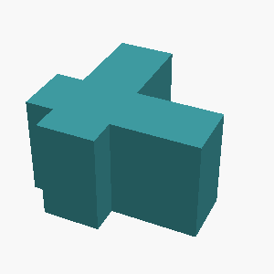
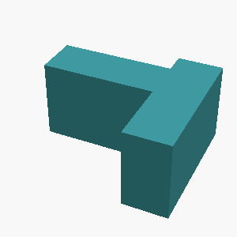
L2 · example 9 · mean 0.82 · max 1.00
An open-top rectangular container with outer dimensions 55mm x 70mm x 55mm, wall and floor thickness 5mm.

 {
outer_w = 55;
outer_d = 70;
outer_h = 55;
wall_thickness = 5;
inner_w = outer_w - 2 * wall_thickness;
inner_d = outer_d - 2 * wall_thickness;
inner_h = outer_h - wall_thickness; // open top
// Outer box
difference() {
cube([outer_w, outer_d, outer_h], center=false);
// Inner cavity
translate([wall_thickness, wall_thickness, wall_thickness]) {
cube([inner_w, inner_d, inner_h], center=false);
}
}
}
// Render the container
container();")
 {
// Outer shell
cube([outer_x, outer_y, outer_z], center=false);
// Inner hollow
translate([wall_thickness, wall_thickness, wall_thickness])
cube([inner_x, inner_y, inner_z], center=false);
}")
 {
outer_width = 55;
outer_depth = 70;
outer_height = 55;
wall_thickness = 5;
inner_width = outer_width - 2 * wall_thickness;
inner_depth = outer_depth - 2 * wall_thickness;
inner_height = outer_height - wall_thickness;
// Outer box
cube([outer_width, outer_depth, outer_height], center=false);
// Inner hollow
translate([wall_thickness, wall_thickness, wall_thickness])
cube([inner_width, inner_depth, inner_height], center=false);
}
container();")
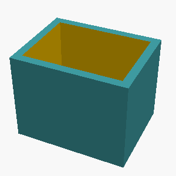
L3 · example 10 · mean 1.00 · max 1.00
A stepped circular shaft standing upright, made of 2 stacked coaxial cylinders from bottom to top: a section of radius 35mm and height 25mm, then a section of radius 20mm and height 20mm. Each section is narrower than the one below it.

 {
// Bottom section: radius 35mm, height 25mm
cylinder(r=35, h=25);
// Top section: radius 20mm, height 20mm, stacked on the bottom
translate([0, 0, 25])
cylinder(r=20, h=20);
}")
 {
// Bottom section: radius 35mm, height 25mm
cylinder(h=25, r=35);
// Top section: radius 20mm, height 20mm, positioned above the bottom section
translate([0, 0, 25]) cylinder(h=20, r=20);
}")
 {
// Bottom cylinder: radius 35mm, height 25mm
cylinder(h=25, r=35);
// Top cylinder: radius 20mm, height 20mm, placed on top
translate([0, 0, 25]) cylinder(h=20, r=20);
}")
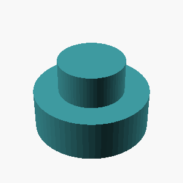
L5 · example 11 · mean 0.73 · max 0.89
A flat rectangular plate 90mm x 50mm and 11mm thick, with a rounded slot cut all the way through its center: the slot is 64mm long along the X direction and 12mm wide, with semicircular ends.

 {
cube([plate_width, plate_height, plate_thickness], center = true);
// Rounded slot through the center
translate([0, 0, -plate_thickness/2]) {
// The slot is along X, centered at origin
// Create a rectangle for the middle part
cube([slot_length, slot_width, plate_thickness + 1], center = true);
// Add semicircular ends
translate([slot_length/2 - slot_radius, 0, 0])
cylinder(h = plate_thickness + 1, r = slot_radius, center = true, $fn=64);
translate([-slot_length/2 + slot_radius, 0, 0])
cylinder(h = plate_thickness + 1, r = slot_radius, cent")
 {
// Draw a rectangle minus the semicircular ends
hull() {
translate([0, width/2, 0]) circle(r=width/2);
translate([length, width/2, 0]) circle(r=width/2);
translate([length/2, 0, 0]) square([length, width], center=true);
}
}
// Main object
difference() {
// Base plate
cube([90, 50, 11], center=false);
// Cut the rounded slot through the center
translate([13, 25 - 6, 0]) rounded_slot();
}")
 {
// Draw a rectangle with semicircular ends
difference() {
// Main rectangle
translate([0, 0, 0])
cube([length, width, height], center=false);
// Cut semicircular ends
// Left semi-circle
translate([0, width/2, 0])
cylinder(h=height, r=width/2, $fn=$fn);
// Right semi-circle
translate([length, width/2, 0])
cylinder(h=height, r=width/2, $fn=$fn);
}
}
difference() {
// Base plate
cube([90, 50, 11], center=false);
// The rounded through slot
rounded_slot(64, 12, 11);
}")
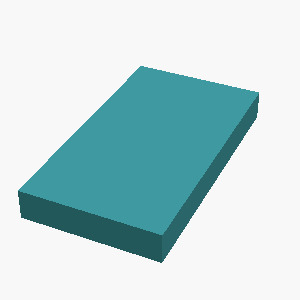
L1 · example 12 · mean 1.00 · max 1.00
A solid rectangular box 10mm wide, 55mm deep, and 60mm tall.

;")
;")
;")
;")
L2 · example 13 · mean 0.86 · max 0.89
A solid box 45mm x 25mm x 60mm with a rectangular notch 10mm wide and 13mm deep cut into the middle of its top face, running through the full depth of the box.

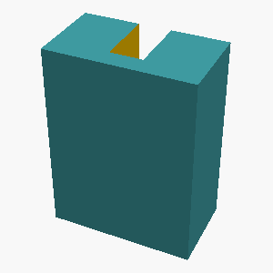
 {
// Main box
cube([45, 25, 60], center=false);
// Notch on top face
translate([(45 - 10)/2, 0, 60])
cube([10, 25, 13], center=false);
}")
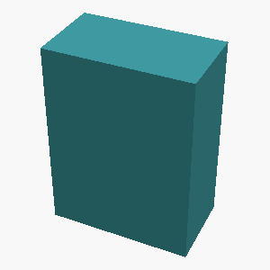
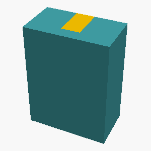
L5 · example 14 · mean 0.50 · max 1.00
A vertical prism 45mm tall whose footprint is a right triangle with one leg 35mm along the X axis and the other leg 20mm along the Y axis, right angle at the origin.


polygon(points=[[0,0],[35,0],[0,20]]);")

translate([0,0,0])
polygon(points=[[0,0], [35,0], [0,20]]);")
;")
;
// Extrude to create the prism
linear_extrude(height=45, center=false) {
polygon(points=[[0,0], [35,0], [0,20]]);
}")
L4 · example 15 · mean 0.68 · max 0.69
A hexagonal prism (like a nut) 18mm tall, measuring 30mm across the flats, with a circular hole of radius 5mm drilled through its center along the axis.

 {
polygon_points = [ for (i = [0 : 5])
[cos(i * 60) * size, sin(i * 60) * size] ];
linear_extrude(height=height)
polygon(points=polygon_points);
}
difference() {
hexagon_prism(15, 18); // hexagon with across-flats of 30mm (radius from center to side = 15mm)
cylinder(h=18.1, r=5, center=false); // hole through the center
}")
 {
polygon(points=[
[hex_radius, 0],
[hex_radius/2, 0.8660254*hex_radius],
[-hex_radius/2, 0.8660254*hex_radius],
[-hex_radius, 0],
[-hex_radius/2, -0.8660254*hex_radius],
[hex_radius/2, -0.8660254*hex_radius]
]);
linear_extrude(height=height) children();
}
difference() {
linear_extrude(height=height)
polygon(points=[
[hex_radius, 0],
[hex_radius/2, 0.8660254*hex_radius],
[-hex_radius/2, 0.8660254*hex_radius],
[-hex_radius, 0],
[-hex_radius/2, -0.8660254*hex_radius],
[hex_radius/2, -0.8660254*hex_radius]
]);")
 {
// Hexagon with distance across flats = 30mm
// Corner-to-corner = 30 / cos(30°) ≈ 34.64mm, but we only need flats = 30mm
// Hexagon radius (distance from center to face) = 15mm
hex_radius = 15;
height = 18;
hole_radius = 5;
difference() {
// Hexagonal prism
linear_extrude(height=height, twist=0)
polygon(points=[
[hex_radius, 0],
[hex_radius/2, 15 * sin(60)],
[-hex_radius/2, 15 * sin(60)],
[-hex_radius, 0],
[-hex_radius/2, -15 * sin(60)],
[hex_radius/2, -15 * sin(60)]
]);
// Circular hole through the center
translate([0, 0, 0])")
 {
linear_extrude(height=h)
polygon(points=[
[cos(0)*size/2, sin(0)*size/2],
[cos(60)*size/2, sin(60)*size/2],
[cos(120)*size/2, sin(120)*size/2],
[cos(180)*size/2, sin(180)*size/2],
[cos(240)*size/2, sin(240)*size/2],
[cos(300)*size/2, sin(300)*size/2]
]);
}
hex_prism(hex_size, height);
translate([0,0,0]) cylinder(h=height+1, r=radius, $fn=64);")
L1 · example 16 · mean 1.00 · max 1.00
A solid cylinder 60mm tall with a radius of 5mm, standing upright.

L5 · example 17 · mean 0.75 · max 1.00
A solid torus (donut shape) lying flat on the table: the ring's centerline circle has a radius of 15mm and the circular tube cross-section has a radius of 5mm.


translate([15,0,0])
circle(r=5);")
;
module torus(R, r) {
rotate_extrude(angle=360)
translate([R,0,0])
circle(r);
}")
;
module torus(R, r) {
translate([0,0,0])
rotate_extrude(angle=360)
translate([R,0,0])
circle(r=r);
}")
;")
L3 · example 18 · mean 0.80 · max 0.85
A solid box 55mm wide (x), 50mm deep (y), and 25mm tall, with 3 holes of radius 2mm drilled vertically through it, evenly spaced on a circle of radius 18.1mm around the center, the first hole on the +X axis; and a horizontal hole of radius 3mm drilled along the X axis through the whole part at half its height, centered in Y. The part sits on the z=0 plane, centered on the Z axis.

 {
// Main solid box
difference() {
// Box dimensions: width = 55, depth = 50, height = 25
translate([-55/2, -50/2, 0])
cube([55, 50, 25], center=false);
// Holes
// 3 vertical holes of radius 2mm on a circle of radius 18.1mm
for (i = [0:2]) {
angle_deg = i * 120; // 0, 120, 240 degrees
angle_rad = angle_deg;
x_pos = 18.1 * cos(angle_rad);
y_pos = 18.1 * sin(angle_rad);
translate([x_pos, y_pos, 0])
cylinder(h=25, r=2, $fn=64);
}
// Horizontal hole of radius 3mm along the X axis at half height
translate([0, 0, 12.5]) // half of height
cylinder(h=50, r=3, $fn=64);
}
}
// Render the main")
 {
// Main solid box
difference() {
cube([55, 50, 25], center=true);
// Holes around the circle
for (i = [0 : 2]) {
angle = i * 120;
x_pos = 18.1 * cos(angle);
y_pos = 18.1 * sin(angle);
translate([x_pos, y_pos, 12.5]) {
cylinder(h=25, r=2, center=false);
}
}
// Horizontal through-hole along X axis at half height (z=12.5)
translate([0, 0, 12.5]) {
cylinder(h=50, r=3, center=true);
}
}
}
// To position the part on z=0 plane and centered, no additional translation needed since cube is centered at origin
main();")
 {
// Main solid box
difference() {
cube([55, 50, 25], center=true);
// Holes of radius 2mm evenly spaced on a circle of radius 18.1mm
for (i = [0 : 2]) {
angle_deg = i * 120;
angle_rad = angle_deg * pi / 180;
x_pos = 18.1 * cos(angle_rad);
y_pos = 18.1 * sin(angle_rad);
translate([x_pos, y_pos, 0])
cylinder(h=25, r=2, $fn=64);
}
// Horizontal hole of radius 3mm along X at half height, centered in Y
translate([0, 25/2, 25/2])
cylinder(h=50, r=3, $fn=64);
}
}
// Position the box so it sits on z=0 plane, centered in X and Y
translate([0, 0, 0]) main();")
 {
for (angle = [0, 120, 240]) {
x = 18.1 * cos(angle);
y = 18.1 * sin(angle);
translate([x, y, 12.5]) // Hole goes through entire height (25mm), centered at half height
cylinder(h=25, r=2, $fn=64);
}
}
difference() {
// Main box
translate([0, 0, 0])
cube([55, 50, 25], center=false);
// Three holes on circle
hole_circle();
// Horizontal hole along X at half height, centered on Y=25
translate([0, 25, 12.5])
cylinder(h=25, r=3, center=true, $fn=64);
}")
L4 · example 19 · mean 0.74 · max 0.85
A gear-like disc 6mm thick with radius 25mm, with 6 rectangular teeth evenly spaced around its rim. Each tooth is 5mm wide and extends 6mm radially outward from the rim, spanning the full thickness of the disc.

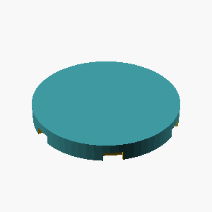
 {
// Main disc
cylinder(h=6, r=25, $fn=$fn);
// Parameters for teeth
tooth_width = 5;
tooth_height = 6;
num_teeth = 6;
radius = 25;
thickness = 6;
for (i = [0 : num_teeth - 1]) {
angle_deg = i * 360 / num_teeth;
rotate([0, 0, angle_deg]) {
// Position each tooth at the rim
translate([radius, -tooth_width/2, 0]) {
cube([tooth_height, tooth_width, thickness], center=false);
}
}
}
}
// Assemble the gear-like disc
gear_disc();")
 {
// Main disc
disk_radius = 25;
thickness = 6;
// Tooth parameters
tooth_width = 5;
tooth_height = 6;
number_of_teeth = 6;
// Draw the main disc
cylinder(h=thickness, r=disk_radius, $fn=$fn);
// Calculate angle between teeth
angle_between = 360 / number_of_teeth;
// Tooth length from rim outward
tooth_length = 6;
// Half of tooth width for positioning
half_tooth_width = tooth_width / 2;
for (i = [0 : number_of_teeth -1]) {
angle = i * angle_between;
// Place each tooth
rotate([0,0,angle]) {
translate([disk_radius, -half_tooth_width, 0]) {
// Tooth as a box: width x height x depth
cube([tooth_height, tooth_width, thick")
 {
// Base disc
difference() {
// Main disc
cylinder(h=6, r=25, $fn=$fn);
// Remove overlapping teeth gaps if needed
}
// Add teeth
for (i = [0:5]) {
angle_deg = i * 60;
rotate([0,0,angle_deg]) {
// Position the tooth at the edge
translate([25, -2.5, 0]) {
// Tooth as a rectangular prism
cube([5, 6, 6], center=false);
}
}
}
}
gear_disc();")
L5 · example 20 · mean 0.45 · max 0.91
A flat rectangular plate 75mm x 45mm and 5mm thick, with a rounded slot cut all the way through its center: the slot is 46mm long along the X direction and 12mm wide, with semicircular ends.

 {
cube([75, 45, 5], center=false);
// Rounded slot cut
translate([(75 - 46)/2, (45 - 12)/2, 0]) {
// Main rectangular part of the slot
cube([46, 12, 5], center=false);
// Semicircular ends along the length
translate([0, 6, 0]) cylinder(h=5, r=6, $fn=64);
translate([46, 6, 0]) cylinder(h=5, r=6, $fn=64);
}
}")
 {
// Base rectangular plate
cube([75, 45, 5], center=false);
// Rounded slot through the center
translate([75/2, 45/2, 0]) {
// Draw the slot as a union of a rectangle and semicircular ends
union() {
// Main rectangular part of the slot
translate([0, -6, 0])
cube([46, 12, 5], center=false);
// Semicircular ends
translate([0, 0, 0])
rotate(90)
cylinder(h=5, r=6, $fn=64);
translate([46, 0, 0])
rotate(90)
cylinder(h=5, r=6, $fn=64);
}
}
}")
L2 · example 21 · mean 0.86 · max 1.00
A solid box 60mm x 30mm x 55mm with a rectangular notch 14mm wide and 7mm deep cut into the middle of its top face, running through the full depth of the box.

 {
translate([ (60 - 14)/2, 0, 55 - 7 ])
cube([14, 30, 7], center=false);
}
difference() {
cube([60, 30, 55], center=false);
notch();
}")
 {
cube([width, depth, height], center=false);
// Cut the notch into the top face, centered along the width
translate([(width - notch_width)/2, 0, height - 1e-3]) // slight offset to ensure cut through
cube([notch_width, depth, notch_depth + 1e-3]);
}")
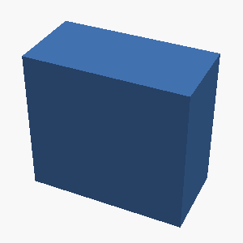
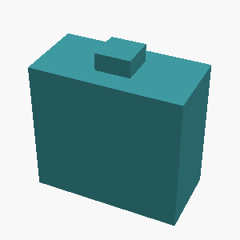
L3 · example 22 · mean 0.32 · max 0.72
A solid hexagonal prism 20mm tall, 40mm across the flats, with two flats parallel to the x axis, with a hemispherical dome of radius 7mm centered on its top face; and 4 holes of radius 2mm drilled vertically through it, evenly spaced on a circle of radius 13.1mm around the center, the first hole on the +X axis. The part sits on the z=0 plane, centered on the Z axis.

 {
// Hexagon with flat sides parallel to X axis
translate([0, 0, 0])
linear_extrude(height=20, center=false)
polygon(points=[
[20, 0],
[10, 17.32],
[-10, 17.32],
[-20, 0],
[-10, -17.32],
[10, -17.32]
], paths=[[0,1,2,3,4,5]]);
// Drill holes
for(i = [0:3]) {
angle_deg = i * 90 + 0; // first hole on +X axis, then every 90 degrees
x_offset = 13.1 * cos(angle_deg);
y_offset = 13.1 * sin(angle_deg);
translate([x_offset, y_offset, 0])
cylinder(h=20, r=2, $fn=64);
}
}
// Hemispherical dome
translate([0, 0, 20])
sphere(r=7, $fn=64);")
 {
// Hexagon with flat sides along x axis
polygon(points=[
[hex_radius, 0],
[hex_radius/2, 3*hex_radius/2],
[-hex_radius/2, 3*hex_radius/2],
[-hex_radius, 0],
[-hex_radius/2, -3*hex_radius/2],
[hex_radius/2, -3*hex_radius/2]
]);
}
// Main object
difference() {
// Hexagonal prism
linear_extrude(height=20, center=false)
polygon(points=[
[hex_radius, 0],
[hex_radius/2, 3*hex_radius/2],
[-hex_radius/2, 3*hex")
L5 · example 23 · mean 0.77 · max 1.00
Create a D-shaft: a 50mm-tall cylinder of radius 20mm whose +X side is sliced off by a vertical plane 13mm from the axis, leaving a flat running the full height.

 {
// Main cylinder
cylinder(h = shaft_height, r = shaft_radius, center = false);
// Vertical plane to slice off the +X side at 13mm from the center
// Create a large cube to overlap with the cylinder and cut off the portion
translate([slice_distance, -100, -100])
cube([200, 200, 200], center = false);
}")
 {
// Main cylinder
cylinder(h=height, r=radius, center=false);
// Plane to slice off the +X side at 13mm from the axis
translate([slice_offset, 0, 0])
rotate([0, 90, 0])
cube([height*2, 2*radius, 2*radius], center=false);
}")
 {
// Main cylinder
cylinder(h=shaft_height, r=shaft_radius);
// Vertical plane to slice off the +X side, 13mm from the axis
translate([slice_distance, 0, 0])
cube([shaft_radius*2, shaft_radius*2, shaft_height], center=false);
}")
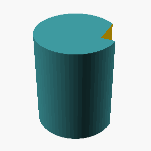
L1 · example 24 · mean 1.00 · max 1.00
A solid rectangular box 65mm wide, 50mm deep, and 20mm tall.

;")
;")
;")
;")
L2 · example 25 · mean 0.81 · max 0.81
A solid box 30mm x 30mm x 30mm with a rectangular notch 10mm wide and 5mm deep cut into the middle of its top face, running through the full depth of the box.

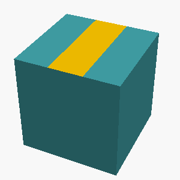
 {
cube([30, 30, 30], center = false);
translate([(30 - 10)/2, 0, 30]) {
cube([10, 30, 5], center = false);
}
}")
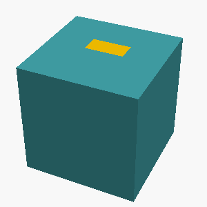
 {
cube([30, 30, 30], center=false);
// Notch cut into the top face
translate([10, 15, 30]) // position at the top face, centered along x, mid along y
cube([10, 5, 30], center=false);
}")
L5 · example 26 · mean 0.93 · max 1.00
Create a 65x45x15mm block with a centered vertical through-hole of radius 5mm, counterbored from the top face to radius 9mm over a depth of 9mm.

 {
// Main through-hole
cylinder(h=15, r=5, center=false);
// Counterbore from the top
translate([0, 0, 15 - 9]) cylinder(h=9, r=9, center=false);
}
difference() {
// Main block
cube([65, 45, 15], center=false);
// Centered hole
translate([65/2, 45/2, 0]) counterbored_hole();
}")
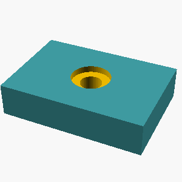
 {
// Main through-hole
cylinder(h=15, r=5, center=false);
// Counterbore from the top
translate([0, 0, 0])
cylinder(h=9, r=9, center=false);
}
difference() {
// Main block
cube([65, 45, 15], center=false);
// Position the hole at the center of the block
translate([65/2, 45/2, 0])
counterbore_hole();
}")
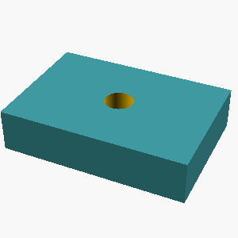
L4 · example 27 · mean 0.25 · max 0.52
A hexagonal prism (like a nut) 10mm tall, measuring 30mm across the flats, with a circular hole of radius 5mm drilled through its center along the axis.

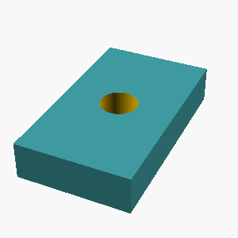
 {
side = flat_to_flat / (sqrt(3));
polygon_points = [];
for (i = [0 : 5]) {
angle_deg = 60 * i + 30;
angle_rad = math.pi / 180 * angle_deg;
x = side * cos(angle_rad);
y = side * sin(angle_rad);
polygon_points = concat(polygon_points, [[x, y]]);
}
linear_extrude(height=height)
polygon(points=polygon_points);
}
// Hexagonal prism with 30mm across flats and 10mm height
hex_prism(30, 10);
// Circular hole with radius 5mm drilled through the center
translate([0, 0, 0])
cylinder(h=10, r=5, $fn=64);")
 {
// Hexagonal prism with radius corresponding to flats length
radius = 15; // since the across flats is 30mm
height = 10;
hole_radius = 5;
// Hexagon is inscribed in a circle of radius r such that across flats = 2 * r
// For flats = 30mm, r = 15mm
intersect() {
// Outer hexagonal prism
hull() {
for (i = [0:5]) {
angle = i * 60;
rotate([0, 0, angle]) translate([radius, 0, 0]) circle(r=1, $fn=64);
}
}
// Subtract the hole: a cylinder through the center
difference() {
// Outer hexagonal prism
hull() {
for (i = [0:5]) {
angle = i * 60;
rotate([0, 0, an")
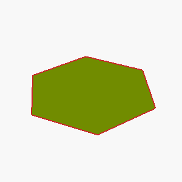
L1 · example 28 · mean 1.00 · max 1.00
A solid rectangular box 40mm wide, 40mm deep, and 20mm tall.

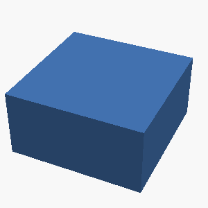
;")
;")
;")
L5 · example 29 · mean 1.00 · max 1.00
A plus-sign-shaped prism 15mm tall: two rectangular bars, each 65mm long and 10mm wide, cross at right angles at their centers (one along X, one along Y), centered on the Z axis.

 {
// Horizontal bar along X-axis
translate([-32.5, -5, 0])
cube([65, 10, 15], center=false);
// Vertical bar along Y-axis
translate([-5, -32.5, 0])
cube([10, 65, 15], center=false);
}")
 {
// Horizontal arm
translate([-32.5, -5, 0]) cube([65, 10, 15], center=false);
// Vertical arm
translate([-5, -32.5, 0]) cube([10, 65, 15], center=false);
}")
 {
union() {
// Horizontal bar along X
translate([0,0,0])
cube([65,10,15], center=true);
// Vertical bar along Y
translate([0,0,0])
cube([10,65,15], center=true);
}
}
plus_sign();")
 {
// Horizontal bar along X
translate([0, 0, 0])
cube([65, 10, 15], center=true);
// Vertical bar along Y
translate([0, 0, 0])
cube([10, 65, 15], center=true);
}")